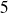

SolLab 2008
SolLab 2008
This study comes within the framework of the PEGASE project (Production of Electricity using GAs turbine and Solar Energy). One of the main objectives consists in simulating accurately the turbulent flow submitted to a high temperature gradient existing in the solar receiver. The results of the simulations will allow understanding the phenomena occurring between the turbulence and the thermal aspects to optimize the solar receiver. The complex geometry of the solar receiver is simplified in an academic configuration: a periodic channel flow with a different temperature imposed at the walls (
for the top wall and
for the bottom wall). These simulations are performed for different temperature ratio (
and

) and turbulent Reynolds numbers (
 and
and
 ). We realized TLES (Thermal Large Eddy Simulation) using the Trio_U code developed by the CEA (French atomic agency) of Grenoble. Using the low Mach number equations, we take into account the effect of the temperature on the density (but not on the velocity). The conductivity and the viscosity vary with the temperature in regard with the Sutherland law.
). We realized TLES (Thermal Large Eddy Simulation) using the Trio_U code developed by the CEA (French atomic agency) of Grenoble. Using the low Mach number equations, we take into account the effect of the temperature on the density (but not on the velocity). The conductivity and the viscosity vary with the temperature in regard with the Sutherland law.
The TLES model has been validated by comparison with DNS (Direct Numerical Simulation) data found in the literature. The TLES calculations at
for a temperature ratio of
is compared to the DNS of Kim and al. (1987) and for
to the DNS of Debusschere and Rutland (2004), and Nicoud (1998). The TLES at
for
 is compare to the DNS of Moser and al. (1999), and Kawamura and al. (1999, 2000). To our knowledge, there are not DNS for the other calculations. For the strongly non-isothermal simulations, a dissymmetry appears in the mean velocity and temperature profiles and a strong effect on the turbulent parts is conspicuous. We observe that for the less turbulent simulation (
) and for the very high temperature gradient (
), the hot side is laminar whereas the mean flow is turbulent. Thanks to these simulations, we presume that there is a transfer of fluctuations from the cold side (higher in turbulence) to the hot side. This hypothesis relies on two isothermal simulations solved with the fluid properties of the hot and the cold sides.
is compare to the DNS of Moser and al. (1999), and Kawamura and al. (1999, 2000). To our knowledge, there are not DNS for the other calculations. For the strongly non-isothermal simulations, a dissymmetry appears in the mean velocity and temperature profiles and a strong effect on the turbulent parts is conspicuous. We observe that for the less turbulent simulation (
) and for the very high temperature gradient (
), the hot side is laminar whereas the mean flow is turbulent. Thanks to these simulations, we presume that there is a transfer of fluctuations from the cold side (higher in turbulence) to the hot side. This hypothesis relies on two isothermal simulations solved with the fluid properties of the hot and the cold sides.